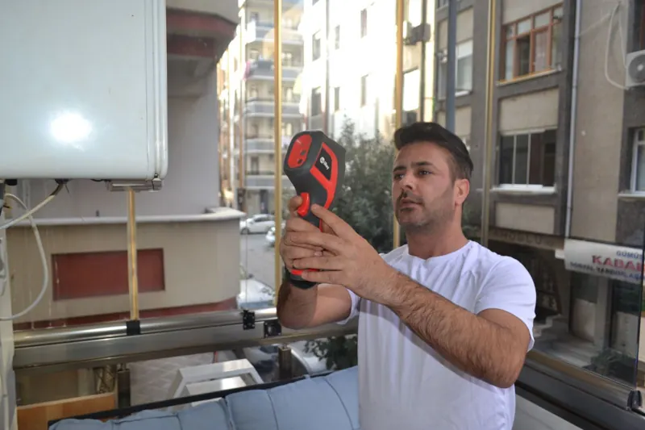
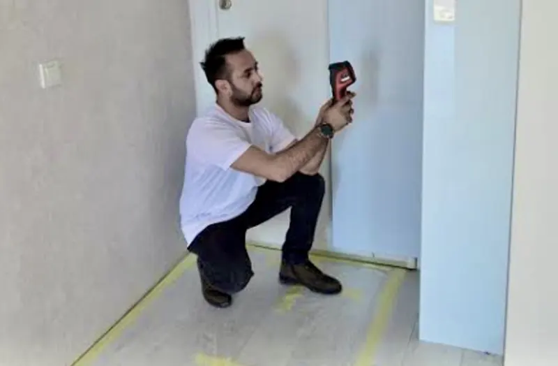

Uzun süredir su faturalarım yüksek geliyordu ve kaçağın nerede olduğunu bulamıyordum. Tespitpro ekibi gelişmiş cihazlarla nokta atışı tespit yaptı ve duvarları kırmadan tamir etti. Hem işçilikleri çok temizdi hem de fiyat konusunda oldukça makuldü. İşlerini severek yapan, güvenilir bir firma. Gönül rahatlığıyla herkese tavsiye ederim
7/24 açık · gece ve hafta sonu★Google 5,0 · 42 yorum
Esenler'de
su kaçağı tespiti.
Esenler'de alt kata su sızması, yüksek su faturası ve duvardaki nem için kaçağı cihazla kırmadan buluyor, aynı ekiple onarıyoruz.
Merkez: Şirinevler · Bahçelievler, Esenler, Yenibosna, Güngören, Bakırköy

Önce buluyoruz, sonra açıyoruzKaçağın noktası kesinleşmeden hiçbir yer kırılmaz.
5,0Google puanı42 gerçek yorum
Esenler'de su kaçağı tespiti.
Esenler'de en sık karşılaştığımız durumlardan biri alt kata su inmesi. Kaçağın yerini bilmeden fayans veya duvar kırmak hem masraflı hem de çoğu zaman yanlış noktayı açmak demek.
Biz önce cihazla dinleyip termal kamerayla bakıyor, yalnızca kaçağın olduğu noktayı açıyoruz. Tespit ve onarım aynı ekip tarafından yapılır.
Esenler'in tüm mahalleleriGüngören sınırıBağcılar sınırı
Bu belirtilerden biri varsa kaçak büyümeden arayın.
Gizli kaçak her gün hem faturanıza hem binanıza zarar verir. Erken tespit, küçük bir noktasal onarım demektir.
- 01Su faturası sebepsiz yükseldi
Bütün musluklar kapalıyken sayaç dönüyorsa hatta gizli kaçak vardır.
Teşhis: Akustik dinleme - 02Alt kata su iniyor
Komşunun tavanında leke veya damlama; kaynak çoğu zaman banyo, mutfak ya da kombi hattıdır.
Teşhis: Termal kamera - 03Duvarda nem, kabarma, küf
Boya kabarması, sürekli ıslak süpürgelik veya küf kokusu tesisattan sızıntıya işaret eder.
Teşhis: Termal kamera - 04Su basıncı düştü
Basıncın aniden zayıflaması ya da kombinin sık su istemesi kaçak belirtisi olabilir.
Teşhis: Kameralı inceleme
Kaçağı nasıl
kırmadan buluyoruz?
Tahminle fayans kırmıyoruz. Birden çok yöntemi birlikte kullanıp kaçağın yerini kesinleştiriyor, sonra açıyoruz.

Müşterilerimiz
ne diyor?
Çok hızlı ve işini iyi bilen firma şu kaçağını anında bulup çözümünü yaptılar herkese tavsiye ederim
Bina girişimizdeki su kaçağından şikayetçiydik sağ olsun ustalar geldi kameralı sistemle tespitini yaptılar sonra da kaçağının onarımını yaptılar bize akşam akşam çok büyük dertten kurtardılar kendilerine çok teşekkür ediyorum iyi çalışmalar diliyorum
Sabahın erken saatlerinde esenlerde bulunan evimizden alt kata su iniyordu tespitpro firmasıyla görüştüm saolsunlar pazar pazar geldiler cihazla kaçağı bulup anında tamirini gerçekleştirdiler kendilerine bu öz verili çalışmalarından dolayı teşekkür ediyorum
Alt komşuya su sızıyor diye ne yapacağımızı şaşırmıştık, sağ olsunlar hemen yetiştiler. Cihazla bakıp kaçağı buldular, tamiri de tertemiz oldu. En azından gözümüz arkada kalmadı, teşekkürler.
Sık sorulanlar.
Esenler'e de geliyor musunuz?
Evet, Esenler'in tüm mahallelerine geliyoruz. Merkezimiz Şirinevler'de, Esenler'e yakın mesafede.
Su kaçağı olduğunu nasıl anlarım?
En sık işaretler: su faturasının sebepsiz yükselmesi, bütün musluklar kapalıyken sayacın dönmesi, alt kata su inmesi, duvarda veya zeminde nem, kabarma ve küf lekesi.
Kırmadan tespit nasıl yapılıyor?
Termal kamerayla duvar ve zemindeki ısı farkını, akustik dinleme cihazıyla borudaki kaçağın sesini takip ediyoruz; gerekirse gider ve borulara kamerayla bakıyoruz. Kaçağın noktası kesinleşmeden hiçbir yeri kırmıyoruz.
Onarım için ne kadar yer açılıyor?
Yalnızca kaçağın olduğu nokta açılıyor. Bütün banyoyu veya mutfağı kırmak gerekmiyor; onarımdan sonra alanı temiz bırakıyoruz.
Gece ya da hafta sonu geliyor musunuz?
Evet, haftanın 7 günü 24 saat çalışıyoruz. Alt kata su iniyorsa önce ana vanayı kapatın, sonra bizi arayın.
Tespitten sonra tamiri de siz mi yapıyorsunuz?
Evet. Kaçağın yerini size gösteriyoruz; onayınızla aynı ekip onarımı yapıyor.
Sorun bildir, talep oluştur.
Formu doldurun; mesajınız WhatsApp'ta hazır açılsın. Bilgileriniz sitemizde saklanmaz.
Kaçağı var,
biz buluruz.
Gece ya da gündüz fark etmez. Arayın, belirtileri anlatın; ne yapmanız gerektiğini telefonda söyleyelim.